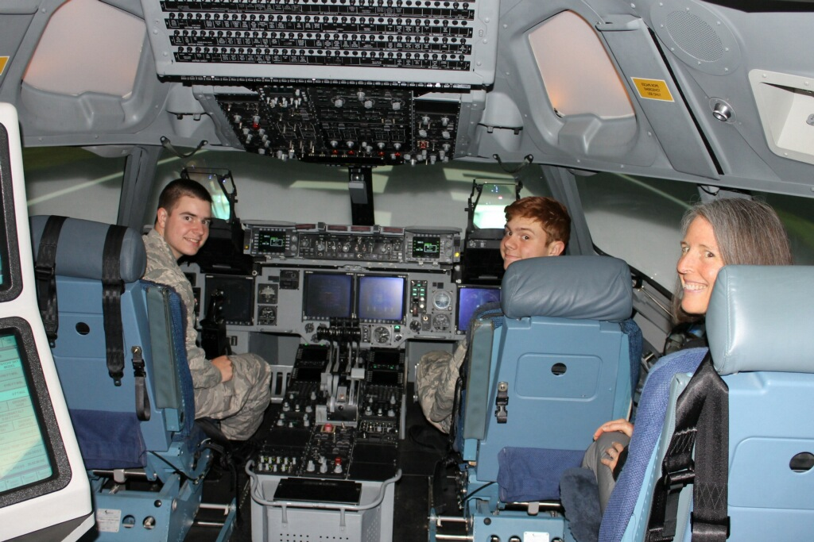
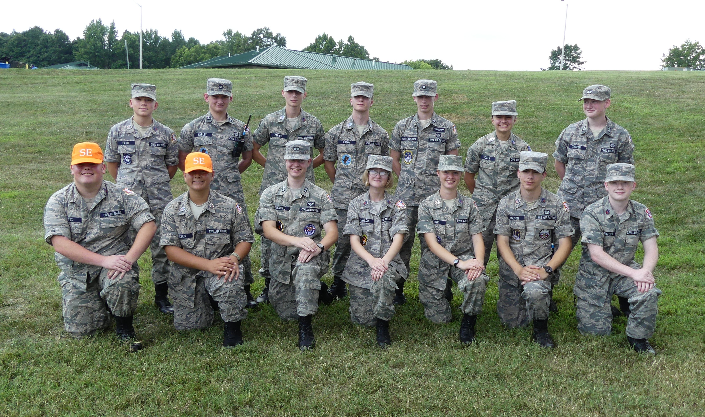
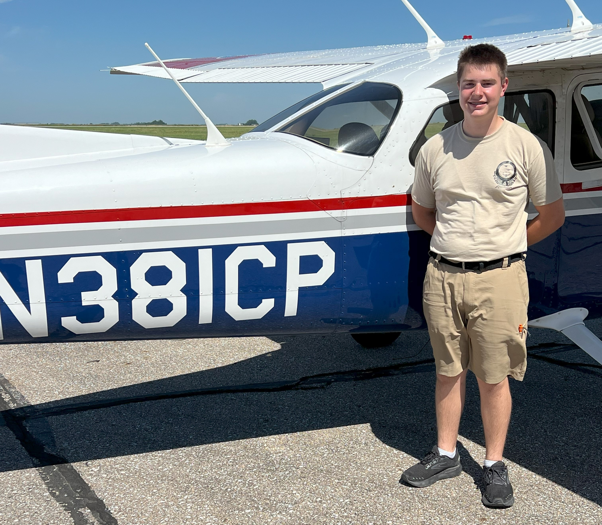
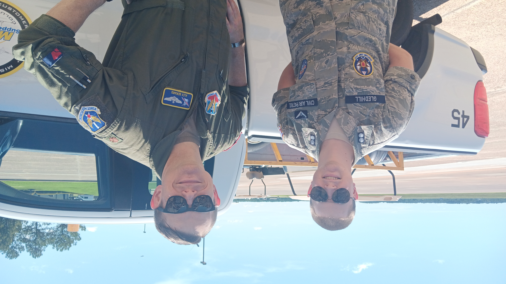
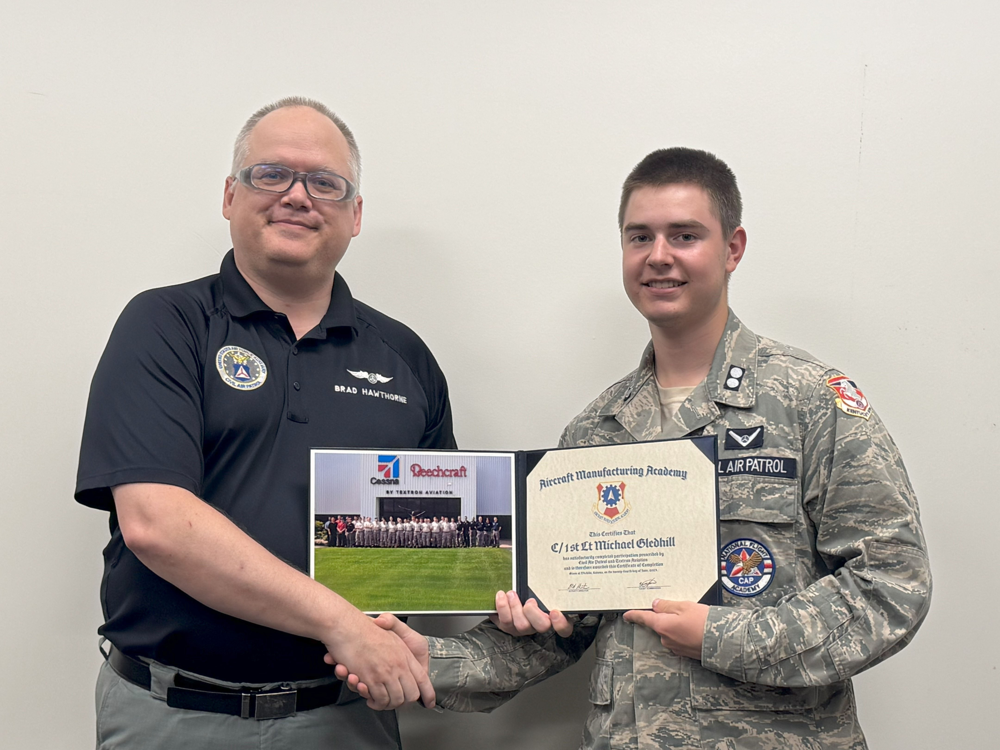

Civil Air Patrol
Leadership, Aviation & Aerospace Excellence

Elevator Speech
I am the Cadet Commander of Civil Air Patrol’s Heartland Composite Squadron, leading 30+ cadets in leadership development, aviation operations, and emergency services. With a Cadet Captain rank achieved through consistent advancement and the Mitchell Award for honor credit, I have completed three encampments and three National Cadet Special Activities. As a CyberPatriot Team Captain and two-time National Semifinalist, I combine technical expertise with aviation proficiency. I have completed my Powered Solo Wings and logged 9 hours toward my pilot rating. My goal is to become a U.S. Air Force pilot while continuing to serve as a mentor and leader.
Contact Information
Michael Gledhill | Cadet Captain, Civil Air Patrol
906 Silktree Circle, Elizabethtown, Kentucky 42701
(502) 269-2525 | c_mgledhill@kywg.cap.gov
Summary
Motivated Civil Air Patrol cadet leader with demonstrated expertise in leadership development, cybersecurity, and aviation. Known for taking on complex responsibilities, performing reliably under pressure, and maintaining high professionalism standards. Passionate about aerospace, technology, and service. Pursuing a career as a U.S. Air Force pilot.
Skills & Certifications
CyberPatriot Program
| Role / Achievement | Years |
|---|---|
| Team Captain | 2023–Present |
| National Semifinalist | 2023–2024, 2024–2025 |
Civil Air Patrol Certifications
Note: *= in training
| Certification | Full Name |
|---|---|
| GES | General Emergency Services |
| ICUT | Introductory Communications User Training |
| SET | Skills Evaluator Training |
| CERT* | Community Emergency Response Team |
| MRO | Mission Radio Operator |
| MSA | Mission Staff Assistant |
| UDF* | Urban Direction Finding |
| GTM3* | Ground Team Member Level 3 |
FEMA ICS Courses
- IS-100 (Introduction to ICS)
- IS-200 (ICS for Single Resources and Initial Action Incidents)
- IS-368 (ICS Multihazard, Mass Casualty Evacuation)
- IS-520 (Operations Planning)
- IS-700 (National Incident Management System)
- IS-800 (National Response Framework)
Awards & Achievements
| Award / Ribbon / Badge | Description |
|---|---|
| Achievement Ribbon (2×) | CyberPatriot leadership & encampment staff |
| Encampment Ribbon (3×) | Participation in three encampments |
| NCSA Ribbon (3×) | Attendance in three National Cadet Special Activities |
| Recruiter Ribbon | Contributed to squadron growth |
| Community Service Ribbon (2×) | Service in community preparedness programs |
| Rocketry Badge | CAP rocketry certification |
| STEM Badge | Aerospace/STEM project recognition |
| Powered Solo Wings | Solo flight in a powered aircraft |
| Search & Rescue “Find” | Successful participation in a SAR mission |
| AFA Cadet of the Year | Outstanding performance, professionalism, leadership |
Leadership Experience
Civil Air Patrol Member | June 2023–Present
Current Role: Cadet Commander
Lead and mentor 30+ cadets; oversee leadership development and mission readiness. Manage weekly operations for 30–50 participants. Coordinate training, safety, instruction, and logistics. Maintain CAP core values and mission-focused culture.
Previous Roles: Flight Commander | Public Affairs Officer | Aerospace & Communications NCO | Assistant Safety NCO | CAC Representative
Encampment Experience
| Activity | Role | Location | Year |
|---|---|---|---|
| Summer Encampment | ATS Flight Commander | Ohio Wing | 2025 |
| Encampment | Cadet Training Officer & PAO | Kentucky Wing | 2025 |
| Winter Encampment | Graduate | Florida Wing | 2024 |
National Cadet Special Activities (NCSAs)
| Activity | Location | Year | Notes |
|---|---|---|---|
| Power Flight Academy | Fremont, NE | 2025 | 9 hours flight; solo certification |
| Aircraft Manufacturing Academy | Wichita, KS | 2025 | Aerospace systems & manufacturing |
| SUPT-FC | Columbus AFB, MS | 2025 | Selected; attendance deferred |
| National Blue Beret | National | TBD | Training program |
| CyberPatriot Academy | Various | 2023–2025 | Advanced cyber defense training |
Aviation Experience
- Sporty’s Online Ground School: Completed
- CAP Orientation Flights: 3 flights (front/back seats)
- Power Flight Academy: 9+ hours, including solo flight
- Powered Solo Wings: Earned
Goals: Complete Private Pilot Certificate; pursue U.S. Air Force pilot training
Education
| Category | Details |
|---|---|
| Academic Status | Homeschooled with dual enrollment |
| College Credits | 12 completed |
| GPA | 4.0 (unweighted) |
| Math Coursework | Pre-Algebra, Algebra I & II, Geometry, Business Math |
| Age | 17 |
Career Goals
Serve as a U.S. Air Force Pilot
Long-term interests: - Commercial aviation operations - Aircraft systems & maintenance engineering - Aerospace leadership & command
Photo Gallery
 C-17 Full Motion Simulator – Ohio Wing Summer Encampment 2025
 Squadron Leadership Team – Kentucky Wing Encampment 2025 (third from left, front row)
 After first solo flight – Power Flight Academy (8 hours of flight training)
 Specialized Undergraduate Pilot Training Orientation – Columbus AFB. Pictured with U.S. Air Force Major (former CAP cadet)
 Graduation from Aircraft Manufacturing Academy – Wichita, Kansas 2025